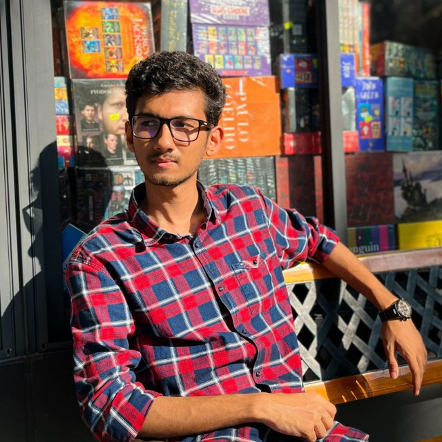

Computer Science & Engineering
Nazmus Sakib Nihal
Computer Science and Engineering graduate with research experience in multimodal AI, computer vision, information retrieval, and speech processing.

About
I am a computer science graduate with a strong foundation in deep learning, multimodal vision models, automated systems, and full-stack software development. My academic work includes research in student engagement detection and image restoration optimization, complemented by hands-on engineering in real-time voice pipelines and open-source contributions.
Core Competencies
- Python, Go, PHP, JavaScript
- Artificial Intelligence, Machine Learning
- Computer Vision & VLM
- Google Workspace, Microsoft Office